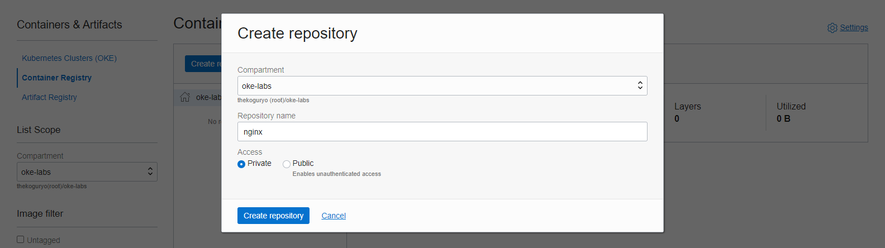
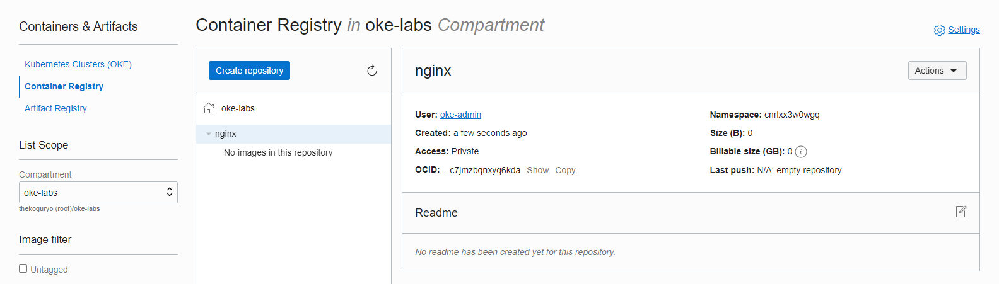
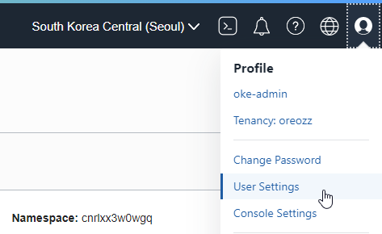
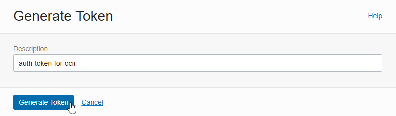
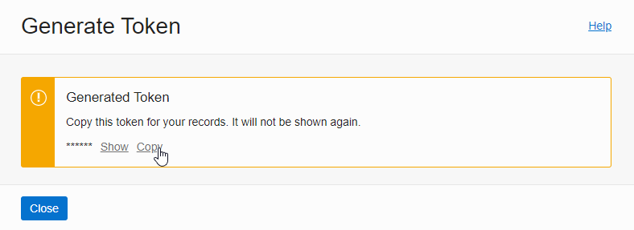
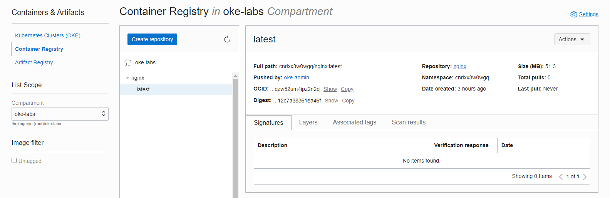
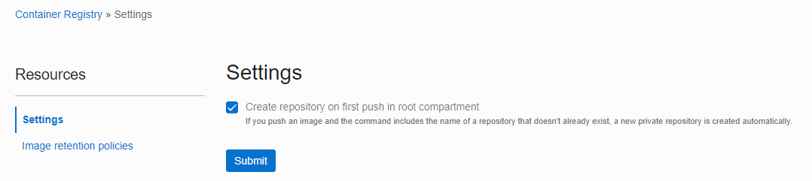

1.5 OCIR 이미지 사용하여 앱 배포하기
OCIR에 이미지 등록하기
Oracle Cloud Infrastructure Registry(OCIR)는 오라클이 제공하는 관리형 컨테이너 레지스트리로 Docker V2 API를 지원하며, Open Container Initiate 호환 컨테이너 레지스트리입니다. docker cli를 통해 이미지를 Push, Pull 해서 사용할 수 있으며, Kubernetes 클러스터에서도 사용할 수 있습니다.
OCIR에 이미지를 사용하기 위해서는 먼저 등록 작업이 필요하며, 앞서 예제에서 사용한 nginx 이미지를 아래 절차에 따라 등록해 봅니다.
OCIR Repository 만들기
-
OCI 콘솔에 로그인합니다.
-
좌측 상단 햄버거 메뉴에서 Developer Services > Containers & Artifacts : Container Registry로 이동합니다.
-
List Scope에서 대상 Compartment(예, oke-labs)를 선택합니다.
-
이미지를 Push하기 전에 먼저 OCIR에 repository를 생성이 필요합니다.
Create repositoy를 클릭하여 아래와 같이 nginx repository를 생성합니다. Push, Pull 모두 인증 테스트를 위해 Access 모드를 Private으로 선택합니다.

-
생성 완료

-
Repository 화면에서 Namespace를 복사해 둡니다. Region내에 Tenant를 나타내는 tenancy-namespace: cnrlxx3w0wgq로 이후 로그인시 필요합니다.
OCI Auth Token 만들기
docker cli로 docker hub에 이미지를 등록하거나, 가져올때 username/password로 docker login을 통해 로그인을 합니다. OCIR에도 마찬가지로 로그인이 필요하며, password 대신 보안을 위해 Auth Token을 사용합니다.
-
우측 상단 사용자의 Profile 아이콘을 클릭하여 User Settings으로 이동합니다.
- 아래 그림상의 유저는 OCI local 유저로 username이 oke-admin입니다.
- 유저명이
oracleidentitycloudservice/~~~로 시작하면 Oracle Identiry Cloud Service의 유저입니다.

-
왼쪽 아래 Resources > Auth Token으로 이동합니다.
-
Auth Token 생성을 위해 Generate Token을 클릭합니다.
-
설명을 입력하고 생성합니다. Auth Token은 생성시에만 볼수 있으므로 복사해 둡니다.


OCIR 로그인 및 이미지 Push
-
앞서 생성한 Auth Token을 통해 Cloud Shell 또는 접속 환경에서 docker cli로 로그인 합니다.
- OCIR 주소:
<region-key>.ocir.io- region-key: 서울 Region은 ap-seoul-1 또는 icn
- 전체 Region 정보: Availability by Region
- username:
<tenancy-namespace>/<username>형식- Username: OCI 서비스 콘솔에서 유저 Profile에서 보이는 유저명을 사용합니다.
- Oracle Identity Cloud Service상의 유저:
<tenancy-namespace>/oracleidentitycloudservice/<username> - OCI Local 유저:
<tenancy-namespace>/<username>
- Oracle Identity Cloud Service상의 유저:
- tenancy-namespace: 앞서 Repository 생성시 확인한 tenancy-namespace 또는 Cloud Shell에서
oci os ns get으로 확인 가능
- Password: 앞서 생성한 로그인할 유저의 Auth Token
oke_admin@cloudshell:~ (ap-seoul-1)$ oci os ns get { "data": "cnrlxx3w0wgq" } oke_admin@cloudshell:~ (ap-seoul-1)$ docker login ap-seoul-1.ocir.io Username: cnrlxx3w0wgq/oke-admin Password: WARNING! Your password will be stored unencrypted in /home/oke_admin/.docker/config.json. Configure a credential helper to remove this warning. See https://docs.docker.com/engine/reference/commandline/login/#credentials-store Login Succeeded - OCIR 주소:
-
이미지 Push
- OCIR에 생성한 Repository로 Push 하기 위해 아래 형식으로 태그를 한 후 Push 하면 됩니다.
<region-key>.ocir.io/<tenancy-namespace>/<repo-name>:<tag>
- nginx:latest 예시
docker pull nginx:latest docker tag nginx:latest ap-seoul-1.ocir.io/cnrlxx3w0wgq/nginx:latest docker push ap-seoul-1.ocir.io/cnrlxx3w0wgq/nginx:latest - OCIR에 생성한 Repository로 Push 하기 위해 아래 형식으로 태그를 한 후 Push 하면 됩니다.
-
OCIR 확인
OCI 서비스 콘솔로 다시 돌아가서 대상 Compartment 기준으로 Push한 이미지가 정상적으로 등록된 것을 알 수 있습니다.

실수를 막기 위한 참고 사항
다음과 같은 상황에서는 docker push하면 어떻게 될까요?
-
Push 전에 OCIR Repository를 사전에 만들지 않은 경우
-
dev/nginx:latest(또는 bitnami/nginx:latest)와 같이 이미지 이름 앞에 추가 적인 경로가 있는 경우에 OCIR Repoistory를 dev 로만 만든 경우
=> 사전에 OCIR Repository를 만들지 않으면, 기본 설정에 의해 root compartment 쪽에 push 됩니다.
=> dev/nginx 까지마 Repository 이름으로 해야 합니다. 그렇게 만들지 않는 경우 동일하게 root compartment 쪽에 push 됩니다.
Container Registry 우측 상단에 Settings를 클릭하여 설정정보를 보면 아래와 같이 대상 repository가 없는 경우 root compartment에 private repository를 자동으로 새로 만들고 push 하는 것이 기본 값으로 체크되어 있습니다.

OCIR 이미지로 OKE 클러스터에 배포
OCIR 이미지 배포 테스트
-
가장 흔한 형태인 Public Container Registry에 이미지를 가져와서 OKE 클러스터에 배포를 해봅니다.
kubectl create deployment nginx-ocir --image=ap-seoul-1.ocir.io/cnrlxx3w0wgq/nginx:latest -
배포 결과 아래와 같이 private repository로 인증문제로 이미지를 가져오는 오류가 발생한 것을 알수 있습니다.
oke_admin@cloudshell:~ (ap-seoul-1)$ kubectl create deployment nginx-ocir --image=ap-seoul-1.ocir.io/cnrlxx3w0wgq/nginx:latest deployment.apps/nginx-ocir created oke_admin@cloudshell:~ (ap-seoul-1)$ kubectl get pod NAME READY STATUS RESTARTS AGE nginx-ocir-6c9d554866-nqgjg 0/1 ErrImagePull 0 10s oke_admin@cloudshell:~ (ap-seoul-1)$ kubectl describe pod nginx-ocir-6c9d554866-nqgjg Name: nginx-ocir-6c9d554866-nqgjg ... Events: Type Reason Age From Message ---- ------ ---- ---- ------- ... Warning Failed 11s (x2 over 23s) kubelet Failed to pull image "ap-seoul-1.ocir.io/cnrlxx3w0wgq/nginx:latest": rpc error: code = Unknown desc = Error reading manifest latest in ap-seoul-1.ocir.io/cnrlxx3w0wgq/nginx: denied: Anonymous users are only allowed read access on public repos Warning Failed 11s (x2 over 23s) kubelet Error: ErrImagePull
OCIR Private Repository 이미지 배포 테스트 - imagepullsecret
Private Repository에서 이미지를 가져와서 사용하려면 인증을 위한 secret을 등록해서 사용해야 합니다. 아래 절차에 따라 secret을 만들어 사용합니다.
-
앞서 Auth Token을 사용하여 docker login을 하였습니다. 로그인 하면 사용자 홈 밑에 .docker/config.json에 인증정보가 저장됩니다.
oke_admin@cloudshell:~ (ap-seoul-1)$ docker login ap-seoul-1.ocir.io Username: cnrlxx3w0wgq/oke-admin Password: WARNING! Your password will be stored unencrypted in /home/oke_admin/.docker/config.json. Configure a credential helper to remove this warning. See https://docs.docker.com/engine/reference/commandline/login/#credentials-store Login Succeeded -
위 인증 정보를 통해 로그인 합니다.
kubectl create secret generic ocir-secret \ --from-file=.dockerconfigjson=/home/oke_admin/.docker/config.json \ --type=kubernetes.io/dockerconfigjson -
또는 docker login 정보 없이 직접 secret을 만들 수도 있습니다.
kubectl create secret docker-registry <secret-name> --docker-server=<region-key>.ocir.io --docker-username='<tenancy-namespace>/<oci-username>' --docker-password='<oci-auth-token>' --docker-email='<email-address>' -
아래와 같이 imagepullsecret을 사용하여 다시 배포합니다.
apiVersion: apps/v1 kind: Deployment metadata: labels: app: nginx-ocir name: nginx-ocir spec: replicas: 1 selector: matchLabels: app: nginx-ocir template: metadata: labels: app: nginx-ocir spec: containers: - name: nginx image: ap-seoul-1.ocir.io/cnrlxx3w0wgq/nginx:latest imagePullSecrets: - name: ocir-secret -
아래와 같이 정상 배포되는 것을 알 수 있습니다.
oke_admin@cloudshell:~ (ap-seoul-1)$ kubectl create secret generic ocir-secret \ > --from-file=.dockerconfigjson=/home/oke_admin/.docker/config.json \ > --type=kubernetes.io/dockerconfigjson secret/ocir-secret created oke_admin@cloudshell:~ (ap-seoul-1)$ kubectl get secret NAME TYPE DATA AGE default-token-2tvwr kubernetes.io/service-account-token 3 24h ocir-secret kubernetes.io/dockerconfigjson 1 13s oke_admin@cloudshell:~ (ap-seoul-1)$ kubectl apply -f nginx-ocir-deployment.yaml deployment.apps/nginx-ocir created oke_admin@cloudshell:~ (ap-seoul-1)$ kubectl get all NAME READY STATUS RESTARTS AGE pod/nginx-ocir-798957d964-9rddt 1/1 Running 0 7s NAME TYPE CLUSTER-IP EXTERNAL-IP PORT(S) AGE service/kubernetes ClusterIP 10.96.0.1 <none> 443/TCP 24h NAME READY UP-TO-DATE AVAILABLE AGE deployment.apps/nginx-ocir 1/1 1 1 8s NAME DESIRED CURRENT READY AGE replicaset.apps/nginx-ocir-798957d964 1 1 1 7s
OCIR Private Repository 이미지 배포 테스트 - default imagepullsecret
매번 imagepullsecret을 지정하는 것이 불편한 경우 기본으로 사용할 Container Repository에 대한 인증을 default로 저장하여 사용할 수도 있습니다.
-
namespace에 default serviceaccount가 있는데, 여기에 아래와 같이 imagepullsecret을 추가합니다.
kubectl patch serviceaccount default -p '{"imagePullSecrets": [{"name": "ocir-secret"}]}' -
그 결과 아래와 같이 default serviceaccount에 기본적으로 사용할 imagesecret이 추가되었습니다
oke_admin@cloudshell:~ (ap-seoul-1)$ kubectl patch serviceaccount default -p '{"imagePullSecrets": [{"name": "ocir-secret"}]}' serviceaccount/default patched oke_admin@cloudshell:~ (ap-seoul-1)$ kubectl get sa default -o yaml apiVersion: v1 imagePullSecrets: - name: ocir-secret kind: ServiceAccount metadata: creationTimestamp: "2021-11-08T13:51:17Z" name: default namespace: default resourceVersion: "277559" uid: f72718f9-135c-46d2-b0ac-a1ea1b990863 secrets: - name: default-token-2tvwr -
앞서 배포한 yaml을 삭제하고 인증정보가 없어 처음 실패한 명령으로 다시 배포합니다.
kubectl create deployment nginx-ocir --image=ap-seoul-1.ocir.io/cnrlxx3w0wgq/nginx:latest -
결과확인하면 default imagepullsecret을 사용하여 정상 배포됨을 알 수 있습니다.
oke_admin@cloudshell:~ (ap-seoul-1)$ kubectl create deployment nginx-ocir --image=ap-seoul-1.ocir.io/cnrlxx3w0wgq/nginx:latest deployment.apps/nginx-ocir created oke_admin@cloudshell:~ (ap-seoul-1)$ kubectl get all NAME READY STATUS RESTARTS AGE pod/nginx-ocir-6c9d554866-vmjtb 1/1 Running 0 5s NAME TYPE CLUSTER-IP EXTERNAL-IP PORT(S) AGE service/kubernetes ClusterIP 10.96.0.1 <none> 443/TCP 24h NAME READY UP-TO-DATE AVAILABLE AGE deployment.apps/nginx-ocir 1/1 1 1 5s NAME DESIRED CURRENT READY AGE replicaset.apps/nginx-ocir-6c9d554866 1 1 1 5s
** 이 글은 개인으로서, 개인의 시간을 할애하여 작성된 글입니다. 글의 내용에 오류가 있을 수 있으며, 글 속의 의견은 개인적인 의견입니다. **